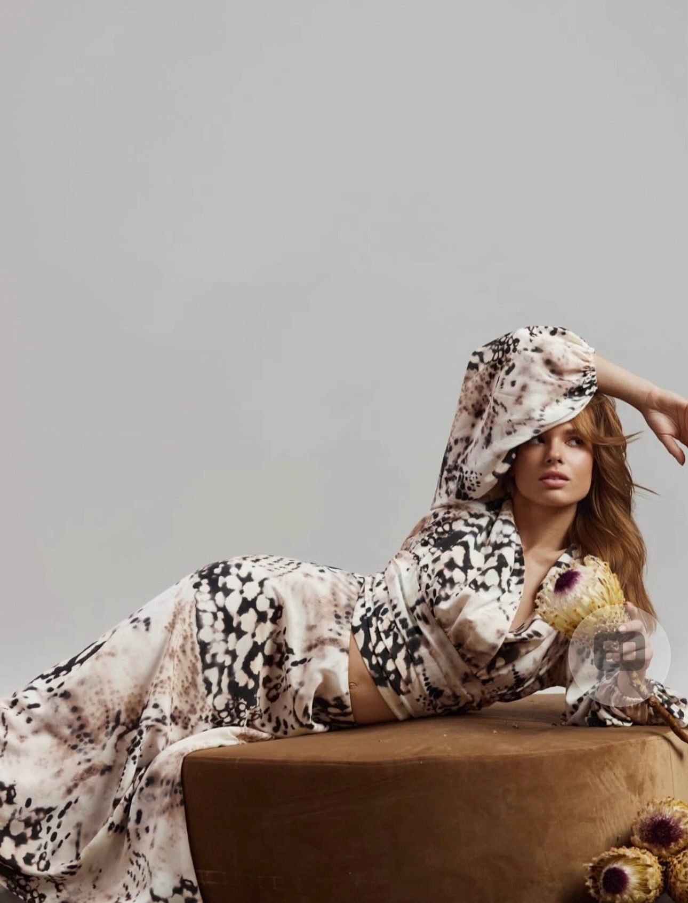
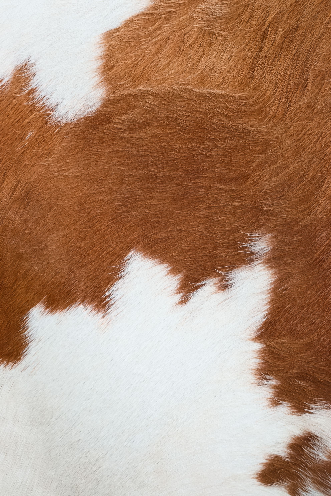
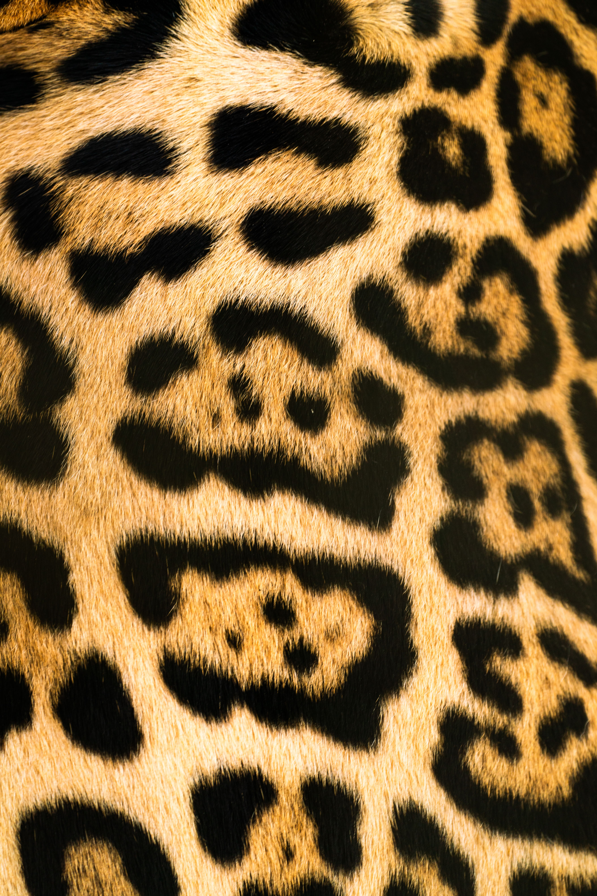
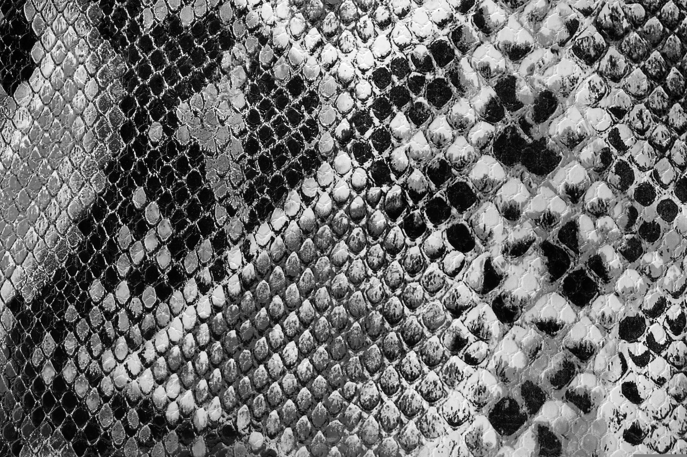
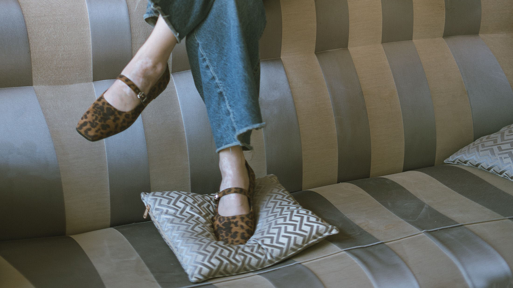
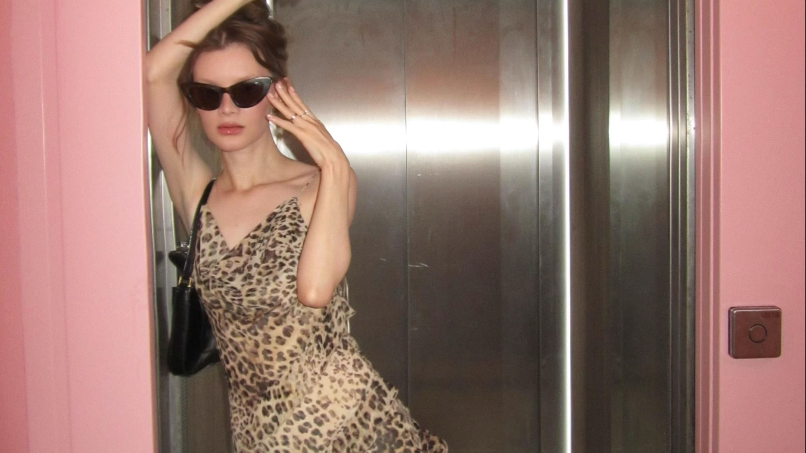
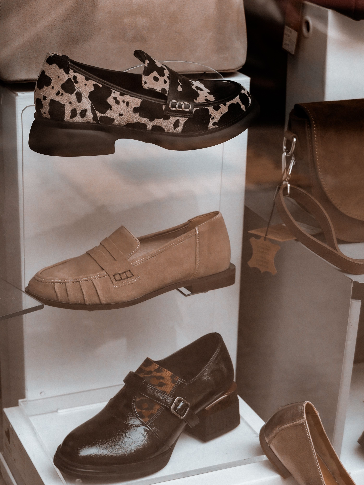
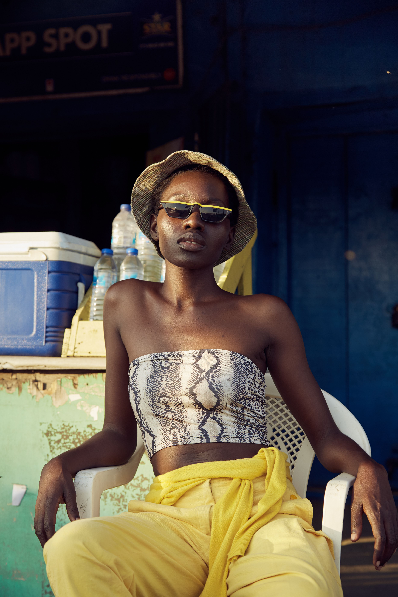

Animal print, the timeless trend that won’t stop coming back. From representing a cliché or a frowned-upon tacky costume, animal print has never accepted the ideology of moving on. Today, the stylised pattern strides back into fashion as a symbol of confidence and self-expression. In the present day, animal print is not seen as a microtrend, but as a maximalist print that returns to the runway almost every season.



Vogue states this trend has caused fashion to become a “jungle” of its own, where leopard print no longer takes the lead but is now amongst an endless amount of different styles. For a timeless style that is noticeably expanding, we need to know which aspects will stay on trend and which aspects will eventually be witnessed as becoming a microtrend.
Animal print as a whole has its own timeline. Starting out as a symbol of power, the print represented bravery, status and importance before even reaching the luxury runway. It was a natural garment carrying its own set of associations, and this helped establish parts of the narrative we still see today.
In 1947, Dior became one of the major fashion houses to transform these associations into a new fashion language, bringing leopard print into luxury fashion through printed textiles. Rather than relying on the animal skin itself, the pattern could now be recreated onto fabric, giving the animal print an identity of its own.
Executed in print on silk chiffon, Dior’s use of leopard marked the beginning of a seemingly never-ending relationship between animal print and fashion. The design didn’t simply disappear after its runway debut. As its place within luxury fashion became established, other designers continued to reinterpret it, allowing the motif to evolve beyond its original associations.
But animal prints weren’t meant to stay in luxury fashion. The identity of this print is forever changing; it’s dependent on how it’s styled, who wears it and what it represents on an individual. It’s a textile that defies the idea of a trend. How can we say a trend is timeless if it keeps reappearing in different formats with different ideologies?
Leopard print is the definition of animal print. It’s what has been keeping this textile alive. Whether it comes back in the form of maximalism or a statement piece, it travels through fashion in different formats.
Many well-known brands are also incorporating this motif into their collections, with footwear taking the spotlight. As spoken about before, animal print isn’t a set front for maximalists only; a subtle approach carries its own narrative. It shows boldness and confidence in a quieter tone, allowing expression without the added attention. If your persona aligns with this approach, the textile is being represented most prominently through shoes. To follow this route while staying on trend, look at Adidas’ Special Animal Print and New Balance leopard-print shoes.
If you’re choosing animal print for the narrative behind the motif, following a more microtrend-led extension of the print could be more suitable. However, leopard print isn’t necessarily one to avoid; the adaptability is purely created by its wearer. Placing this print in a larger garment, like a jacket, creates a bold approach, evoking the confidence that is wanted to be portrayed.
Zara, the fast-fashion brand known for doing trends “just right”, is jumping on the trend with its viral leopard-print cocktail dress, creating a sophisticated statement that blends expression with a more classic approach. And then there’s Ego, the fast-fashion expert filled with different garments carrying the textile, including leopard-print co-ords that style leopard with leopard for a comfortable, casual look.
For starting out in a trend so ‘extra’, leopard print is the baseline. But how far can it go before traditional becomes old? Would you want to be more in the spotlight with the newly expanded motifs?



Cow print has taken an unexpected turn. Like in 2019, we’re starting to see it everywhere. In women’s clothing, accessories and even household décor. However, like we saw in 2019, cow print isn’t necessarily here to stay.
Evoking luxury is the fluffy winter-wear cow-print jacket, making a practical statement piece. With cow print showcasing details of neutral tones, it’s a piece you can really wear with anything.
However, unlike leopard print, cow print isn’t noticeably ever coming back, and if it does, it’s not for a while. So, for something longer-term, cow-print accessories are definitely something I would lean more into. From a statement belt from New Look to a cow-print shoulder bag, it’s a style that can stay in your wardrobe ready for its next debut, without taking up so much space.
Snake skin is the easy choice when deciding what print works for you. It doesn’t sit in either category of traditional animal print or experimentation. It’s a pattern that is always around, but rarely demands attention. The neutral tones of brown, creams and greys allow it to hide within an outfit whilst adding texture and individuality.
Now, although it is a trend that is always there, it doesn’t mean it’s necessarily accepted within fashion. It’s a trend you kind of have to have the confidence to wear through different seasons, which you could argue is the definition of this trend: self-expression and bold moves.
Snakeskin is a textile that showcases luxury more than experimentation and tradition. From snakeskin boots to a snakeskin accessory, it’s a pattern that is adaptable, on trend and can be transformed into different narratives of quiet confidence or a more noticeable statement.

Animal print isn’t going anywhere. But that doesn’t mean every print deserves a permanent place in your wardrobe.
Leopard has already proved itself. It’s adaptable, recognisable and has the ability to move between seasons without completely losing its identity. Cow print feels different. It’s exciting, unexpected and makes more of a statement, but its future feels less certain. Snake print sits somewhere in between, offering a quieter way into the trend whilst still carrying that sense of confidence and luxury.
So, is animal print a trend? Yes. But is it a microtrend? Not necessarily.
Perhaps we’ve been looking at animal print the wrong way. Instead of asking whether it’s back, we should be asking which version of it is next.
For Winter 2026, our pick? Leopard for longevity, cow for the statement and snake for the subtle shift.
Sign up with your email address to receive news and updates.